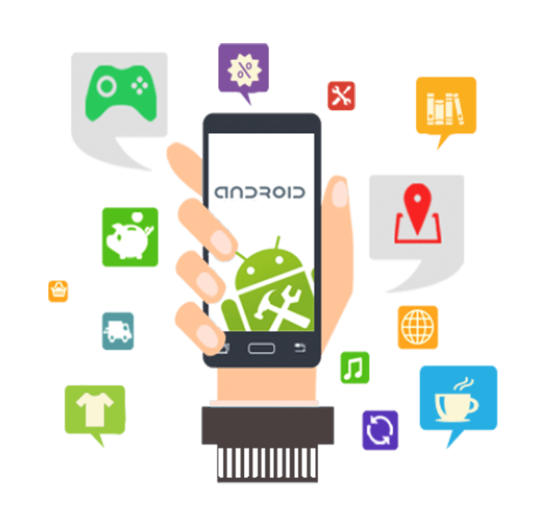

<div class="container">
    <div class="row">
        <div class="col-12 mb-5 header" >
            <span class="header-head-1">Android App Development Services</span>
            <span class="header-head-2">
                Explore the brilliance of Android app development and cash in on the overflowing traffic with the help of Android app development company!
            </span>
        </div>
        <div>
            
            <span class="mb-3 header-image-span">Android apps make the biggest fragment of the app market.</span>
                <p>More than 80% of mobile users have Android phones and that is your cue to pick Android as the target OS for your next app development project. Utilizing expert Android app development services can give the right shape to your idea of a business mobile app, tailor-made to achieve success.</p>
                <p>There are numerous benefits of selecting Android over other operating systems. For starters, it is the most widely used operating system throughout the world. With such a huge user base, businesses get the chance to target more and more users and benefit from them. Secondly, Android offers a great versatility of features and functions. You can try new things to make your app more successful and beneficial for your users. Lastly, with Android, you can garner great benefits and earn great ROI on an Android app as there are multiple sales channels and lots of users.This is why, businesses are always looking to hire Android app developer!</p>
                <p>However, to hit it big with your Android app, you really need to work on what lies under the hood of the app. If you fail to turn your idea into a smooth, feature-rich, advanced, and interactive app, all the time, money, and efforts spent on the app are just wasted fuel. To avoid putting yourself in such a situation, you must pick the best Android app development services available to you.
                    SoftProdigy is a celebrated Android app development company working with businesses and clients for more than a decade. Our work and client satisfaction speak volumes about the work that we have put in every project we worked on. Our expertise in Android started when Android was first launched to the markets.
                </p>
        </div>
    </div>
</div>
